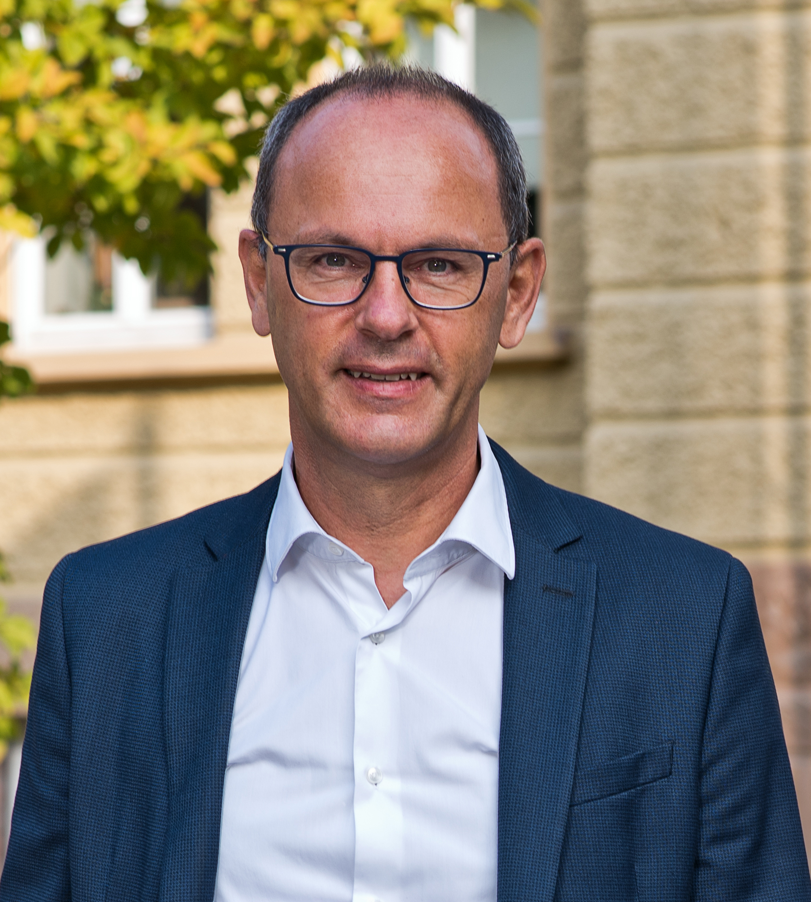
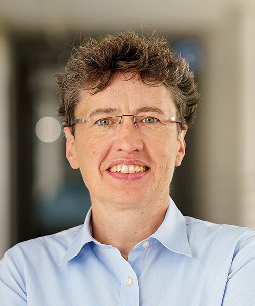

SS
Shelly Sachdeva
National Institute of Technology Delhi, India
“Schema generation for document stores using workload-driven approach”
Workshop at the 43rd IEEE International Conference on Data Engineering
AIDDO 2027
A half-day workshop on AI-assisted database design, optimization, adaptation, and intelligent data systems.
AIDDO 2027 workshop proposal accepted for ICDE 2027.
Workshop website launched; call for papers preparation underway.
About AIDDO
Database design and optimization increasingly require decisions across conceptual, logical, and physical levels while workloads, data characteristics, and system requirements continue to evolve. AI and machine learning create new opportunities for cost and performance estimation, design-space exploration, prediction, adaptation, and automated decision-making.
AIDDO brings together researchers and practitioners working on intelligent database design and optimization across relational, NoSQL, multi-model, temporal, graph, vector, and heterogeneous data systems. The workshop also welcomes broader AI-for-data-management contributions that connect to database design, optimization, adaptation, schema evolution, or the evolution of data-intensive systems.
Call for Papers
We invite original research, vision, experience, benchmark, and tool contributions on AI-assisted database design and optimization. In addition to schema-centered work, we welcome closely related AI-for-data-management research that advances automated design, tuning, adaptation, or evolution of data-intensive systems.
Workshop Format
AIDDO 2027 is planned as a half-day workshop combining peer-reviewed research presentations, two invited talks, and an interactive discussion.
Review process
Final submission-system and formatting instructions will be posted once confirmed with the ICDE workshop and proceedings chairs.
Important Dates
The deadlines will be coordinated with the ICDE Workshop and Proceedings Chairs and adjusted if required.
Invited Talks
National Institute of Technology Delhi, India
“Schema generation for document stores using workload-driven approach”
CentraleSupélec, France
“New-for-Old Modeling Methodologies for a uniform data access”
Interactive Discussion
The workshop will include an interactive discussion on opportunities and challenges in AI-assisted and autonomous database design.
Organization

Free University of Bozen-Bolzano, Italy
johann.gamper@unibz.itFree University of Bozen-Bolzano, Italy
maryam.mozaffari@unibz.it
FernUniversität in Hagen, Germany
uta.stoerl@fernuni-hagen.deProgram Committee
Paolo AtzeniRoma Tre University, Italy
Mohamed-Amine BaaziziSorbonne Université, France
Gao CongNanyang Technological University, Singapore
Anton DignösFree University of Bozen-Bolzano, Italy
Irena HolubováCharles University, Czech Republic
Meike KlettkeUniversity of Regensburg, Germany
Jiaheng LuUniversity of Helsinki, Finland
Eslam NazemiShahid Beheshti University, Iran
Stefanie ScherzingerUniversity of Passau, Germany
Heiko SchuldtUniversity of Basel, Switzerland
Jiannan WangTsinghua University, China
Contact
For questions about the workshop, please contact the organizers. Additional submission information will be posted as soon as it is confirmed.